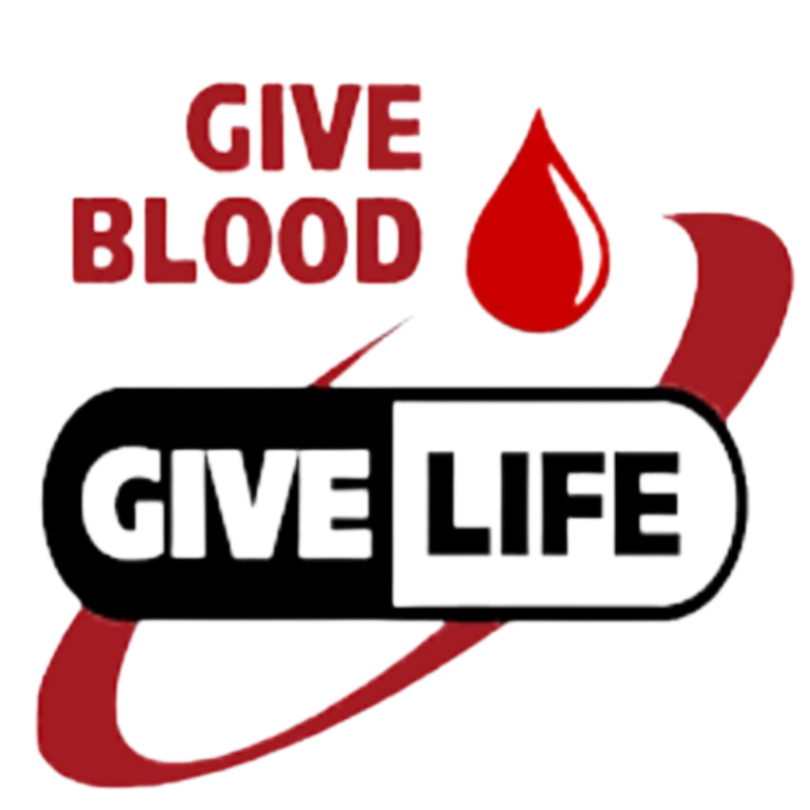

Blood is a life so,

BLOOD BANK MANAGEMENT SYSTEM
Blood is a life so,
24321
Registered users
24321
Blood units collected
"Blood Bank Management System" is a Web App solution designed to efficiently
manage the operations of a blood bank. It aims to organize the process of blood donation,
storage, and distribution while ensuring optimal record management and improved
accessibility for patients in need. The system incorporates features such as donor
registration, blood typing, screening for blood requests, and expiration dates. With its
user-friendly interface, the Blood Bank Management System provides an effective tool
for enhancing the overall efficiency and effectiveness of blood bank operations.
| Compatible Blood Type Donors | ||
|---|---|---|
| Blood Type | Donate Blood To | Receive Blood From |
| A+ | A+, AB+ | A+, A-, O+, O- |
| O+ | O+, A+, B+, AB+ | O+, O- |
| B+ | B+, AB+ | B+, B-, O+, O- |
| AB+ | AB+ | Everyone |
| A- | A+, A-, AB+, AB- | A-, O- |
| O- | Everyone | O- |
| B- | B+ B- AB+ AB- | B- O- |
| AB- | AB+, AB- | AB-, A-, B-, O- |